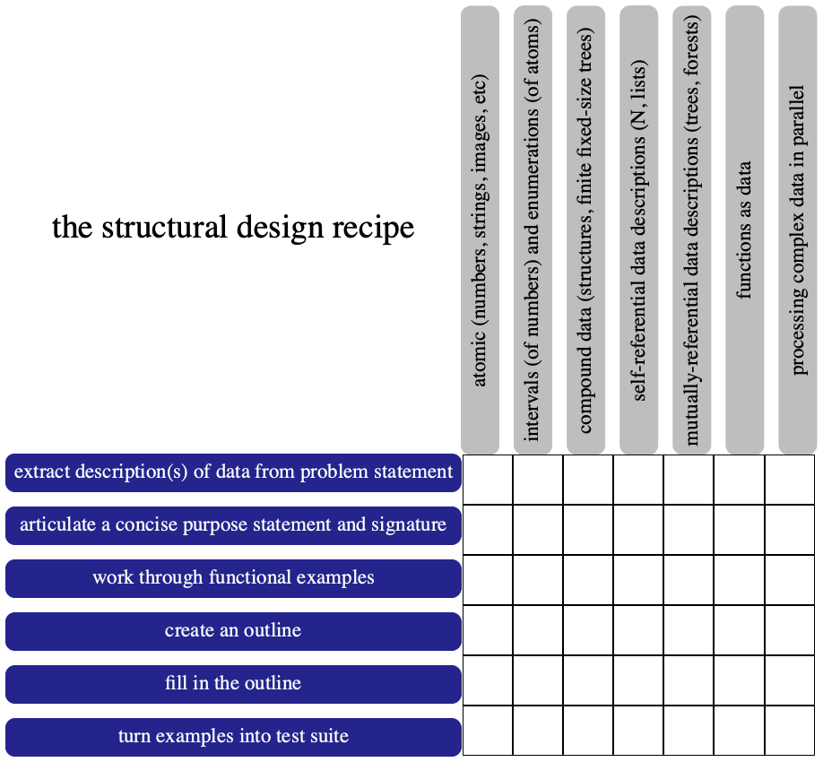
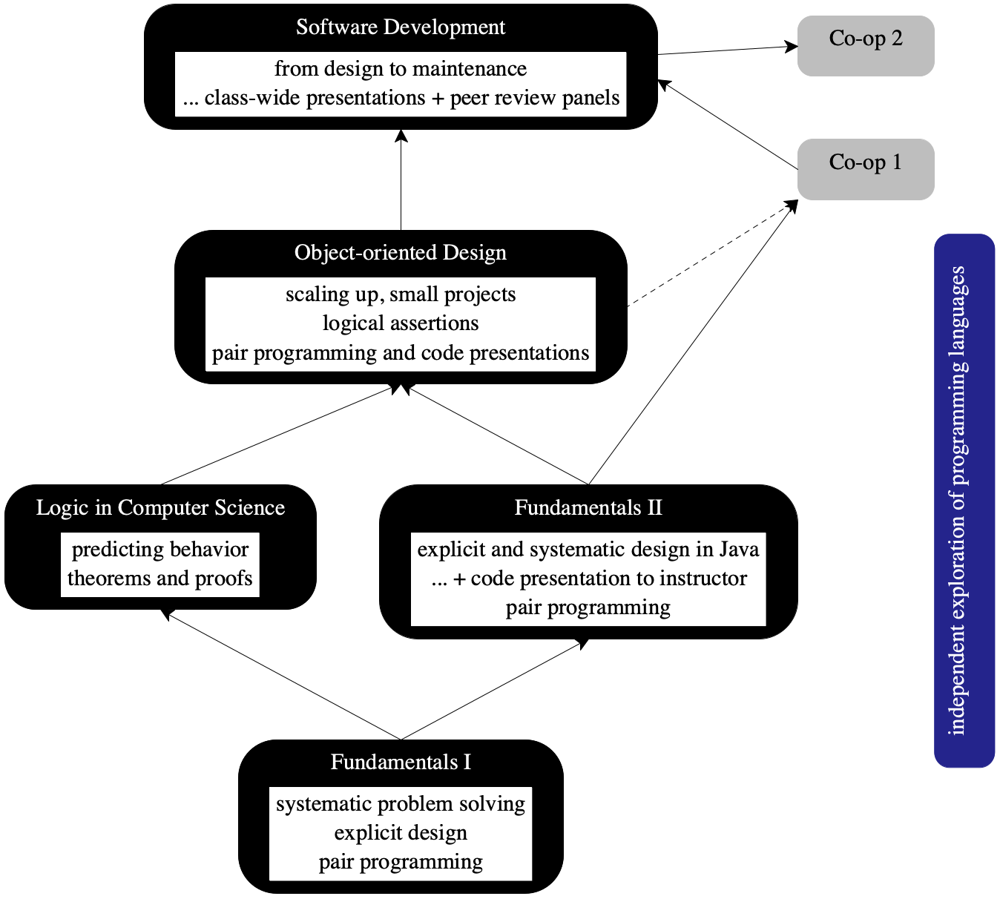
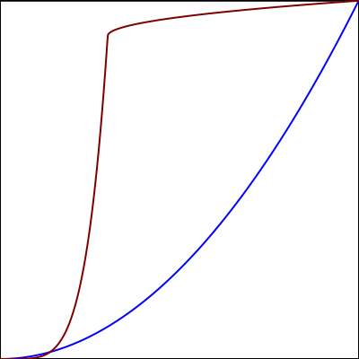
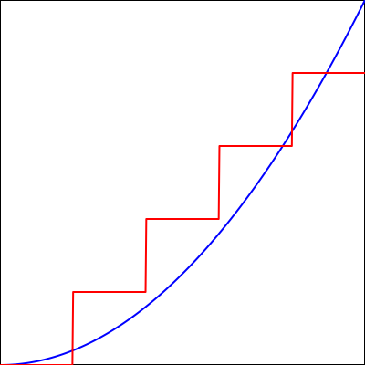

Developing Developers
8 Sep 2015
Abstract
Northeastern offers a unique But see P.S. Uniqueness. curriculum on programming. Instead of the currently fashionable programming language, it focuses on explicit and systematic approaches to program design. To bring this idea across to the full range of Northeastern freshmen, the first course uses a simple teaching language that is tailored to our goals. Follow-up courses explain how to apply the design principles to industrial programming languages, how they enable logical reasoning about code, and why they matter when programmers deal with large and complex software.
In parallel, these core courses on programming insist on presenting programming as a people discipline. Students find out that people write programs to inform other people of ideas. Working with compilers and interpreters also teaches them that these tools provide only shallow feedback. For true insight, they must turn to other people. Hence, students work in pairs from the very first day in class. Pair programming forces them to articulate their thoughts so that they can converse about programs. Downstream courses also teach students how to present their ideas to large groups and how to listen and evaluate such presentations.
Acknowledgments Corky Cartwright, Bruce Duba, Robby Findler, Kathi Fisler, Matthew Flatt, Dan Friedman, Gregor Kiczales, Shriram Krishnamurthi, and Mitch Wand helped me hone this vision over 25 years. Many Northeastern colleagues have taught these core courses and their feedback improved my initial vision: Amal Ahmed, Will Clinger, Pete Manolios, Viera Proulx, Olin Shivers, Sam Tobin-Hochstadt, Jesse Tov, David Van Horn, and Thomas Wahl. Dale Vaillancourt and Carl Eastlund, former PhD students, were critical to my first attempt at Logic in Computer Science. Larry Finkelstein and Richard Rasala put in place a playground where I could easily influence the shape of the core courses.
Changed in version 1.0: Wed Sep 16 15:07:49 EDT 2015: initial release
Changed in version 1.1: Wed Sep 16 21:59:11 EDT 2015:
typos and feedback from
Tony Garnock-Jones,
Therapon Skotiniotis,
Shriram Krishnamurthi,
Matthew Flatt,
Vincent St-Amour,
Karl Lieberherr
Nick Shelley
Changed in version 1.2: Wed Sep 16 23:14:00 EDT 2015: added P.S. Uniqueness
Changed in version 1.3: Thu Sep 17 18:59:11 EDT 2015: added figure 23
Changed in version 1.4: Fri Sep 18 10:28:42 EDT 2015: note on
OO teaching languages
Changed in version 1.5: Sun Sep 20 15:24:08 EDT 2015 added A Note on the Trinity,
fixed the description of Waterloo’s curriculum
Changed in version 1.6: Thu Nov 5 21:27:20 EST 2015 feedback, typos from
Thomas Wahl
Changed in version 1.7: Thu Feb 11 10:21:44 EST 2016 typos from Marc Kaufmann
Changed in version 1.8: Tue Mar 21 12:12:50 EDT 2017 garbled sentence from Ron Garcia
Changed in version 1.9: Wed Nov 15 17:11:18 EST 2017 changed title to what
it should have been all along
1 Explicit and Systematic Program Design
Ninety-percent or more of the College’s graduates will end up engineering
software for the first few years out of college. The College—
I first spelled out the “explicit design” idea in Structure and Interpretation of the Computer Science Curriculum [JFP 2004].
When these courses are taught properly, they not only improve the preparation of our students for their first job as creators of software. They also lay the foundation for the students’ careers as project leaders, managers of software teams, CTOs, CEOs, entrepreneurs, medical doctors, and wherever else systematic problem solving matters.
1.1 Traditional Programming Courses
The vast majority of courses on programming employ a “tinker until it works” approach. Instructors tend to pick a currently fashionable programming language and then proceed in a rather old-fashioned manner, dating back to the days of Fortran IV. At the beginning, instructors show some version of a “hello world” program (console or GUI based), followed by simplistic input modes (again console or GUI based), variable declarations and assignments, arrays and loops. Still further down the road, these courses may also introduce functions, methods, and classes.
Q What’s the biggest lie in computing? A “It works.”
In sum, traditional programming courses teach programming implicitly, with students picking it up via mimicking and experimenting. This approach may appeal to students who love to tinker with gadgets and video games, but it also turns off many others who might be equally talented for engineering actual software or benefit to the same extent from a properly taught course on programming and problem solving.

1.2 Explicit Design Rules
How to Design Programs is the first text book on programming that explicitly spells out how to construct programs in a systematic manner. One half focuses on structural design, the other on design and use of abstractions, generative recursion (“divide and conquer”), and accumulators (“loop variables”).
Figure 21 displays the design recipe used for structural design. It consists of two dimensions: the y axis specifies a six-step problem-solving process, the x axis enumerates (some of) the forms of data with which programmers represent information, in increasing complexity.
read the problem statement, figure out the data that is needed to represent the information of interest, and illustrate their insight with concrete examples;
articulate a purpose statement that concisely describes what the function or program is supposed to compute, including a signature;
work through functional examples, that is, explain what the function or program is supposed to produce when given certain inputs, based on steps 1 and 2;
create an outline of the program, based on steps 1 and 2;
fill in the outline from step 4, using steps 2 and 3; and
turn the examples from step 2 into a test suite for the program from step 5.
The horizontal direction of the structural design recipe expands students’ understanding of data. Roughly speaking, every language comes with a sub-language for data, and programmers choose certain forms of data to represent information from the domain of interest (“the world”). Atomic data is drawn from this domain, and processing atomic data demands domain knowledge. Because traditional programming courses often focus on processing atomic data (especially numbers), they rely on domain knowledge and thus fail to show how much computing and programming can contribute to systematic problem solving and design. Every step along the horizontal axis increases students’ knowledge of the world of data, taking them all the way to trees, forests, graphs, and so on. Also at each step, they must re-interpret the six steps from the design process. Turing is Useless spells out this idea in more detail. Conversely, this organization implies that instructors may assign only homework problems that are within the convex hull of students’ design knowledge for a specific stage in their design development.
A design-process approach guides students all the way through the composition of well-designed functions into complete programs, the creation of programming abstractions; the coding of “divide-and-conquer” recursive algorithms; and the creation of algorithms that maintain invariants across iterations (“accumulators”).
Once students understand each of these design recipes, they also learn to choose among alternatives that produce equivalent functionality. For example, structural design naturally yields insertion sort algorithms, while generative recursion yields quick sort or merge sort algorithms. To make an informed choice, students need to learn about designing under constraints and, in computing, about big-O.
1.3 The Design Process is General
Teaching explicit and systematic design introduces students to a general problem-solving approach that applies to many more domains than programming. A journalist can use it to plan a story. The first step calls for developing the background. Next comes the articulation of the thesis, the collection of illustrative examples, the creation of an outline based on facts, the writing, and the final fact-checking step. It is equally obvious that businessmen can tackle logistical problems in this manner, engineers must follow a similar approach, lawyers may analyze a case with it, scientists perform lab work in this way, and surgeons are able to conduct operations with a systematic process.
Unsafe languages, such as C, C++, and Objective C, increase the number of dependencies and thus put an extra burden on the programmer when it comes to the inevitable search for, and elimination of, mistakes. A safe language is therefore a superior introductory language.
1.4 Programming is a People Discipline
The design-oriented approach
gradually introduces students to the idea that programming is about coping
with complexity in software—
Compilers, interpreters, and other IDE tools provide almost no help with controlling complexity; ACL2 and its relatives are too expensive for general programming problems. Hence, programmers who need help (normally) turn to other programmers because they are people who can think. It is therefore imperative that students develop the skill to converse about program designs, meaning they must learn to articulate their thoughts in all kinds of ways. The best way to do so, is to present programming as a discipline that is not about nerds sitting in a cubicle but people helping other people creating beautiful and well-designed artifacts.
2 Organizing the Idea into Courses
Figure 22 presents a concise summary of the College’s core programming courses in the form of a dependence graph. Students majoring in computer science ought to have covered these courses by the time they start their second co-op. Students who just want a taste of programming and systematic problem solving take Fundamentals I. The following subsections spell out how these courses line up with the idea of teaching “explicit, systematic design” and the “people skills” that go with them.

2.1 Fundamentals I: Designing with Teaching Languages
introduce novice programmers to the systematic and explicit design of programs
expose students with prior programming experience to design.
Theorem 1 Novice programmers make mistakes.
Theorem 2 A compiler and the run-time system articulate error messages under the assumption that the programmer knows the entire language.
Corollary 1 An introductory course cannot serve a wide spectrum of complete novices if it uses an off-the-shelf (industrial) language.
Examples of ill-suited languages include C++, Java, JavaScript, Python, Racket, and Scheme—
even though they are, or were, used for first courses. Pascal is also too large, even though Wirth explicitly motivated Pascal as a “small teaching language.”
Corollary 2 Reducing the size of the language improves its error messages.
Corollary 3 An introductory course needs a series of small languages that suffice to illustrate the design recipes.
Figure 23 summarizes this little excursion into the land of
social theorems with two simple graphs. The graph on the left shows how an
“off-the-shelf” language may have a gentle curve for a short period, but
then poses a steep (learning) curve for every novice. The blue line in the
graph suggests how smooth the curve ought to be instead. The graph on the
right shows how to approximate the blue line with a step function—
 
Fundamentals I uses four (out of five) steps, aka, teaching languages, collectively known as *SL. The first one (Beginning Student Language or BSL) codifies students’ notation from pre-algebra courses in high school: function definitions, conditional function definitions, and function applications. It extends this small set with conventional (numbers, booleans) and unconventional (images) atomic data plus structure definitions. The downstream languages expand the expressive power of this first language with compact notations for lists, local definitions, and higher-order functions.
As for people skills, Fundamentals I introduces students to the idea of pair programming. Students work in pairs for all homework assignments. A pair consists of a “pilot” and a “co-pilot.” The former is in control of the keyboard and the design process. To inform the latter, the pilot explains the design aloud; the co-pilot checks the evolving design against the question-and-answer game from the design recipe and questions any deviations from the recipe. It is the task of the co-pilot to engage the pilot in conversation. Partners switch roles on a regular basis.
Pair programming also helps students who are paired with partners of unequal knowledge and skills. In the context of Fundamentals I, these roles are often non-obvious. Students who “have always programmed” tend to find themselves in the role of misguided hack, who must be pushed back to the ways of explicit design by the seemingly less knowledgeable partner. Teaching greatly enhances learning. Even if experience with programming helps one of the partners, both benefit: one by becoming a teacher, the other by having someone to talk to even when no teaching assistants are around.
The course switches partnerships on a regular basis so that students get to know other people and different ways of interacting with distinct personalities.
2.2 A Note on the Trinity
The trinity of design, teaching languages, and pedagogic IDE—
Time and again people react negatively to my presentations of this trinity and the teaching languages. One common objection is that explicit design must work in all languages and therefore we might as well indulge students, parents, chairmen, deans, and egos by teaching the currently hot “thing.” On one hand, they are correct. Explicit design works for all languages; if it didn’t, we would be wasting our students’ time in Fundamentals I and fail them at a massive scale. Indeed, it would not enable Fundamentals II. On the other hand, objectors fail to see that the introduction of explicit design calls for a careful composition of all the pieces that make for a novice-friendly environment: accessible error messages from the chosen language and a pedagogic IDE without clutter. Anyone who wishes to replace one element of this trinity must consider the other two, too.
2.3 Fundamentals II: Designing with Java
systematically design programs in the context of a real-world language
incorporate existing libraries into design.
add type checking
cover object-oriented programming, and
incorporate the idea of “programming via composition of existing building blocks.”
While the design concepts from Fundamentals I heavily rely on types in several different ways, they do not assume type checking. The rationale behind this choice is twofold. On one hand, in this day and age, many (if not most) of our students will use a dynamically typed language like *SL for their first co-op. They need a systematic process even more than those who end up with a statically checked language. On the other hand, type checking just adds another formal layer to the practice of programming, that is, adding error messages to those from the reader, parse, and run-time system just adds to the confusion about layers that affects novice programmers. Most mainstream programming languages come with an explicit static type system, however, and our students deserve to see how type checking jives with design.
The same people eventually recognized that C++ is not a proper object-oriented language because it does not allow programmers to focus on objects as run-time values. A better terminology would have been “value-oriented programming” but this choice would conflict with the narrow-minded use of “value” in the object-oriented community.
The latter is also crucial for constructing programs from libraries and frameworks. While real programmers spend some time creating components from scratch, a lot of their work is to find frameworks or libraries that provide part of the functionality and to plug those together. Our explicit design approach covers this idea as the use of existing abstractions, but additional research is needed to formulate useful design recipes.
Notes (1) Real-world languages such as Java obstruct proper design. For example, both our approach to program design as well as the gang of four’s well-known design patterns lead to identical code for processing sequential or tree-shaped data structures. Unfortunately, Java’s failure to properly implement tail-calls then forces programmers to reformulate the properly designed pieces of code with while and for loops.
(2) Sam Tobin-Hochstadt and David Van Horn implemented teaching languages for Fundamentals II to bridge the gap between Fundamentals I and Fundamentals II and used them to teach honors sections of the latter. The teaching languages gradually introduced the concepts from object-oriented languages, starting from a functional approach and matching the design concepts. If a computer science unit has the luxury to spend an additional semester on preparing their students for real-world programming, this approach is highly commendable. End of Notes
With regard to people skills, Fundamentals II is like Fundamentals I and adds a first taste of code reviews. That is, Fundamentals II continues to have students program in pairs. In addition, Fundamentals II provides the proper context to request a first code review from students. One possibility is to assign a small project toward the end of the course and to have students present an overview to the instructor. An alternative is to have students present pieces from their homework portfolio.
2.4 Logic: Reasoning about Well-designed Code
People often use the term “type-safe” languages. The term is vague because untyped languages also come with sound prediction systems, and “safety” has no universal definition.
Logic is to programming what analysis is to engineering. Engineers use analytic mathematics to make predictions about the robustness and behavior of their blueprints. Programmers continuously predict the behavior of the phrases they write down and compose. As programming language researchers have shown over the past 50 years, logic provides the proper foundation for programmers’ predictions and logical meta-theory explains the validity of making predictions. More precisely, predictions correspond to theorems, validations for predictions are proofs, and program executions map to models. It is thus proper to call a validation system sound if its predictions are always true statements about executions; an unsound system makes correct and incorrect predictions.
If a programmer is lucky, the bad array reference in C/C++ causes a seg fault.
Consider arrays in a typed language. Roughly speaking, an array a of
type T is a function that maps an index in some prefix of the natural
numbers to instances of T. Programmers can thus predict that applying
a to i—
When programmers create code, they continuously make, and rely on,
predictions—
make reasoning about programs explicit
introduce students to tools that assist programmers with this task.
Logic in Computer Science realizes the first goal with an introduction of classical
(propositional and first-order) logic, heavily emphasizing structural
induction as a proof method for establishing theorems about functions and
programs. Structural induction is dual to the design recipe of Fundamentals I—
The course motivates the second goal by applying logic to sizable programs. Logical reasoning applied to such programs requires the management of large number of details. Software is well-suited for managing numerous details, so students Logic in Computer Science uses a proof assistant for the task of scaling proofs to complete programs.
ACL2, the chosen proof assistant, encapsulates a logic that closely corresponds to the design recipe of Fundamentals I. If students properly design the desired functions in Fundamentals I, ACL2 can often prove the desired theorems easily. If students tinker their way to a complete function, the proof assistant tends to fail. In short, ACL2 naturally reinforces the explicit design rules of Fundamentals I.
2.5 OOD: Scaling It Up
The primary goal of OOD is to deepen students’ practical programming skills by scaling up the complexity of the projects, without changing the programming language from Fundamentals II. Instead of complete, but relatively small programs, students are expected to design program components and glue components together. Designing components also introduces the challenge of creating interfaces and protocols and, conversely, of using existing interfaces and protocols.
Interfaces and protocols often come with logical assertions that partly explain the implementations’ behavior. A classical assertion may restrict the kinds of arguments a method can cope with, e.g., only positive integers or only an array of integers that add up to 100. A temporal assertion in an interface may require that an open method is called before a read method.
While Logic in Computer Science shows how logical reasoning formally works on small functions and programs, OOD focuses on stating and exploiting such assertions during the informal prediction process that takes place when programmers design interfaces and code. Until formal methods researchers make formal reasoning affordable, this informal mode of thinking will inform the best designers in the field.
As feasible, OOD also scales up students’ communication skills. Instead of presenting their designs and code to an instructor, students may present their work to the entire class. Instructors should encourage the class to comment on the content of the presentation.
2.6 Software Development: Putting it All Together
Software Dev is basically a capstone of our core courses. The ideal Software Dev student has taken OOD, completed the first co-op, and explored the landscape of programming languages. What this student needs, is a chance to get involved in the maintenance of code. More than any other task in the realm of software, maintaining code shows why design matters, why logical reasoning matters, and why people skills matter.
To emphasize these points, Software Dev instructors ought to allow students to choose their favorite programming language for the course project(s). The students should not perceive the chosen language as a constraint, though they will necessarily find out that it is one. If they don’t, instructors have chosen the wrong project.
Since the ideal Software Dev student is not able to manage a large project,
instructors ought to introduce students to this aspect of engineering
software explicitly—
The key to Software Dev is that students must revisit code that they or their
peers created weeks ago and that the overall project is complex and large
(say more than 5,000 lines of code in any language) that this maintenance
task becomes non-trivial. This step may take the form of fixing bugs,
adding features, replacing features, and even subtracting them. To complete
such tasks, students must reconstruct the thoughts that the creators of the
code had—
code reviews benefit from a general familiarity with the task;
the result of code reviews does not depend on prior attempts to read designs or code;
the ideal code review panel consists of three panelists: (1) a head reader who guides the panel’s interaction with the presenters, (2) a secondary reader, and (3) a secretary who primarily focuses on writing down the issues revealed during the review and suggestions made.
Note Instructors get a lot of respect in this course if they implement the project and are willing to present their own code at any point in time. End of Note
3 What’s Missing?
The College’s core curriculum has stood the test of time. Our co-op employers recruit our students in good and bad times, and many are put to work on actual programming projects. It has also become clear that our students are still missing out on some skills that they need to become well-rounded engineers of software.
Independent Exploration Programming is like playing an instrument. The more we practice, the better we get at it. Programming is also like science. Constantly pushing the boundaries of our knowledge is key. What I often find, however, is that our students do not seem to understand that programming beyond the classroom is essential to their growth. Why do our students lack incentives to explore on their own? What can we do to provide incentives?
Companies are clearly recognizing that tricky coding questions about algorithms knowledge do not identify the best developers.
use a performance debugger to identify hot spots in programs,
analyze hotspots and their surroundings,
create alternative solutions, and
set up relevant performance test suites to easily compare different solutions.
See the course charter that Peter D., Alan M., Magy S., Abutalib A., and myself worked out.
Unsafe Programming For better or worse, the world now has a software infrastructure built in unsound (unsafe) languages, such as C, C++, or Objective C. Over the past decade or so, people have recognized this problem and have smothered the infrastructure software with layers created in safe languages. One approach is to use (reasonably) safe scripting languages that allow easy access to the unsafe layer as needed. Python scripting is a prime example for this mode of work.
When programmers work in a mixed context they encounter entirely new problems: seg faults, core dumps, or programs that output implausible results. Our students must learn to write code in this world, pinpoint bugs, and debugging techniques that take into account lack of soundness. The College has finally created a course along these lines; time will tell whether it accomplishes its mission.
testing—
While all five core courses heavily emphasize unit testing, our students would greatly benefit from a course that exposes them to the wider topic— regression testing, black-box and white-box testing, etc.— as well as the currently most widely used testing methods— random testing and mutation testing. programming in a team—
None of the five core courses are suitable for true team programming, which is quite different from pair programming. Most of our graduates will end up working in teams and preparing them for this style of work seems critical. software modeling – Software engineers benefit from “executable” models of their plans as much as architects like to simulate 3D walk-throughs of blueprints. Mapping such a model to constraint solvers may reveal oversights, conflicts, hidden constraints and other issues that become expensive to fix if they are not discovered in time. Researchers like Daniel Jackson and Emina Torlak have clearly demonstrated the value of modeling software blueprints and have made some effort to turn their insights into courses. Perhaps it is time for Northeastern to catch up.
In addition to these topics, the College must also pay attention to emerging domains where software will play a critical role. No matter what courses are offered though, the instruction should emphasize explicit ideas over “mimic and learn implicitly.”
4 P.S. Uniqueness
Brown teaches two versions of a like-minded first-year curriculum. One covers explicit and systematic design in untyped and typed functional (teaching) language as well as Java. Krishnamurthi’s alternative introduction synthesizes our freshman course with an algorithmic course based on Udi Manber’s excellent book.
Kathi Fisler mapped out an adaptation of our first-year curriculum at WPI. Her adaptation improved on several aspects of Fundamentals II; her “honors” variant of Fundamentals I actually deserves the name.
Prabhakar Ragde at Waterloo has created three flavors of courses similar to our Fundamentals I: “regular,” “non-major,” and “advanced.” All second-semester versions move into the design of imperative programs inspired by the remaining material of HtDP/1e. Logic is covered in the “advanced” track using Haskell.
Gregor Kiczales at British Columbia offers several different tracks for the last few weeks of the first course. Each shows students how to apply explicit design in a range of scripting languages, tailored to certain majors. He also created a Coursera version of the course, dubbed Systematic Programming; this on-line version has attracted several brilliant young high school students to the Racket community.
At the University of Chile, Éric Tanter uses Python to teach HtDP.
Mike Sperber merged Fundamentals I and Logic in Computer Science into a single course at Tuebingen, developed appropriate variations of our teaching languages, and published a popular text book in German on the course.
Kenichi Asai from Ochanomizu University has ported the GUI framework for teaching Fundamentals I to OCaml and experimented with a functionally typed course in the third semester. His department also offers a regular version of Fundamentals I.